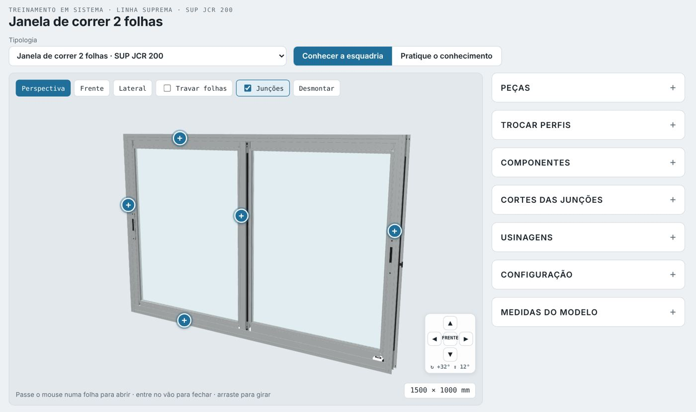
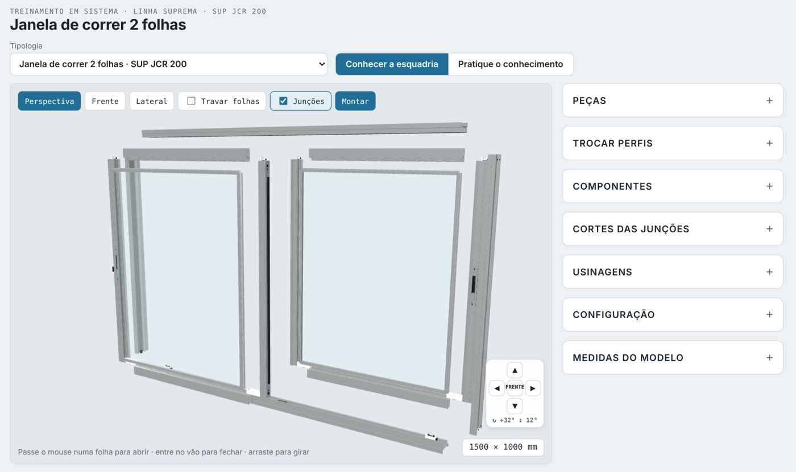
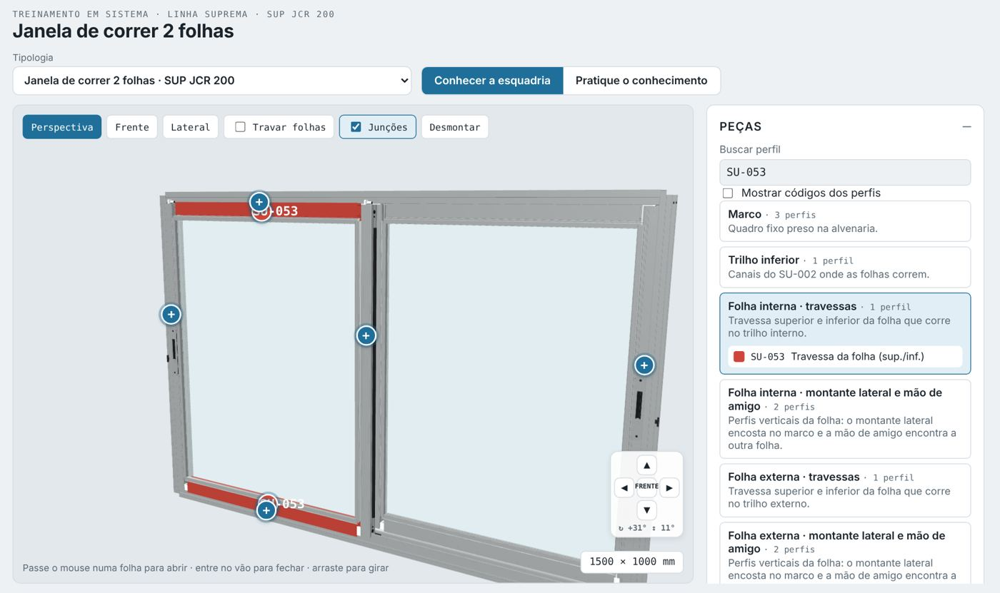
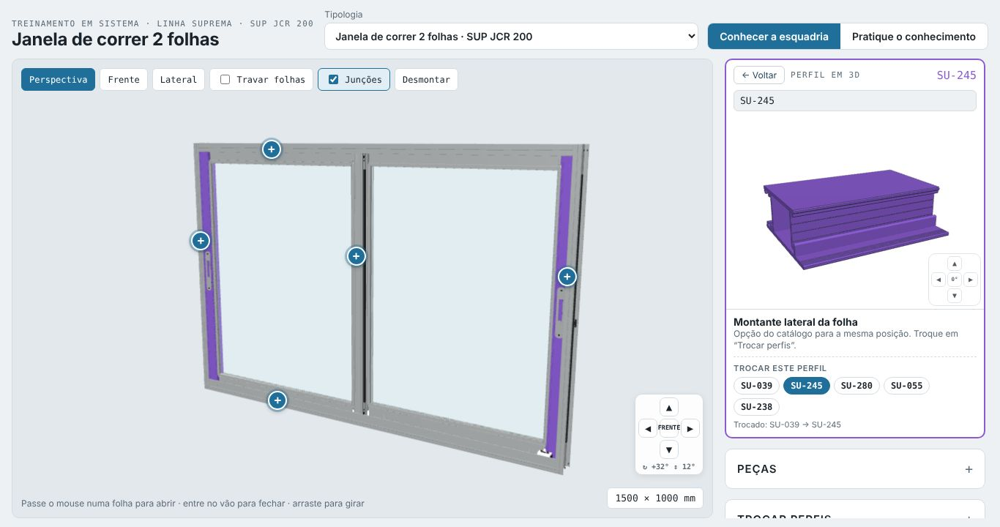
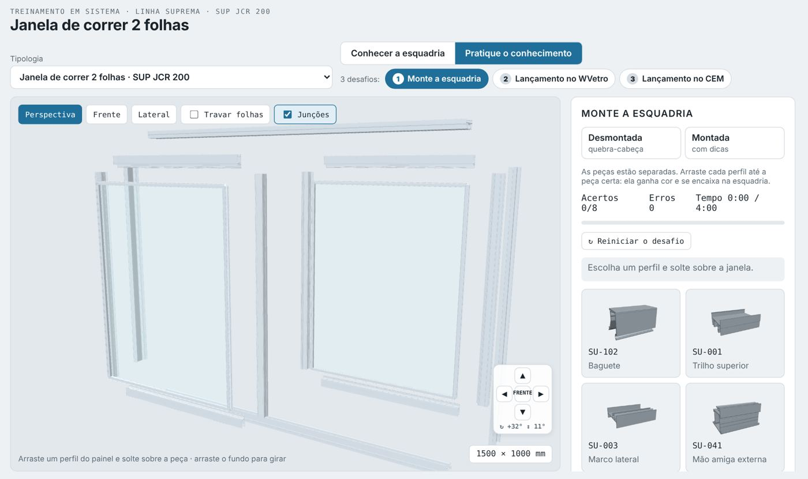
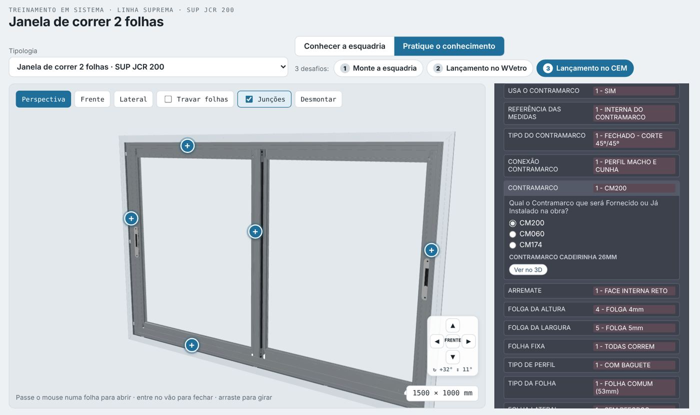
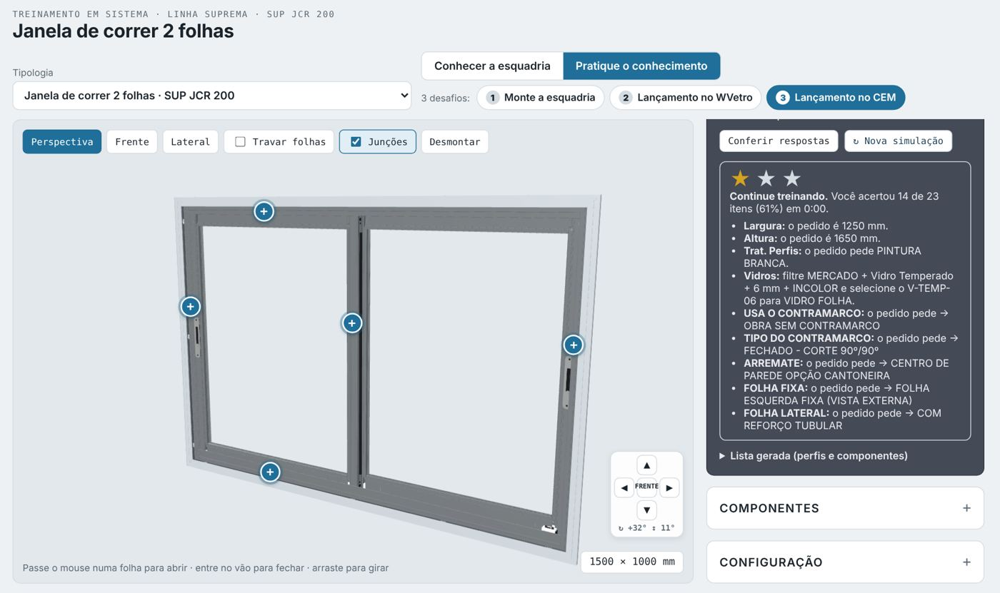

Como usar o Treinamento FC 3D
Você vai estudar as janelas e portas das linhas Suprema e Gold em 3D, peça por peça, e depois praticar em três desafios: montar a esquadria e lançar o pedido no WVetro e no CEM.
Login: o que a FC te passou (ex.: aluno01)
Senha: a senha que veio junto
O login é pessoal. Tudo o que você estuda e os desafios que faz ficam guardados nele.
Entrar

- Abra o link no navegador (Chrome, Edge ou Safari).
- Digite seu Login. Pode ser com ou sem letra maiúscula.
- Digite a Senha e toque em Entrar.
- Seu nome aparece na barra escura no alto. Para sair, use Sair.
A tela

- Tipologia: escolha a esquadria. São 11, da linha Suprema e da linha Gold.
- Conhecer a esquadria: para estudar.
- Pratique o conhecimento: para os 3 desafios.
- Janela 3D no centro e painéis do lado (no celular, ficam embaixo).
- Embaixo, à direita, a medida da esquadria.
Conhecer a esquadria
Gire, abra as folhas, desmonte e veja os cortes. Nada aqui vale nota: é para explorar à vontade.
- Girar: arraste com o mouse ou com um dedo. Zoom: rodinha do mouse ou dois dedos.
- Setas no canto ▲ ◀ ▶ ▼: giram 15° e inclinam 10° por toque. FRENTE volta de frente.
- Perspectiva, Frente, Lateral: vistas prontas.
- Abrir as folhas: passe o mouse na folha, ou use o controle de abertura no painel.
- Desmontar: separa as peças como um quebra-cabeça. Montar junta de novo.


- Os botões + na janela abrem o corte daquela junção, igual ao desenho do catálogo.
- Também pelo painel Cortes das junções.
- Voltar à janela sai do corte.
- Na Porta com persiana (linha Gold), o botão Só a persiana mostra a caixa transparente e as lâminas enrolando no eixo.
- Pausar para parar o movimento.

Peças e perfis

- Abra Peças e toque num grupo: marco, trilho, folha interna (travessas / montante lateral e mão de amigo), folha externa, baguete.
- A peça ganha cor na janela e aparece o código do perfil.
- Toque no código para ver o Perfil em 3D.
- Em Buscar perfil, digite só o número (ex.: 053).
- O Perfil em 3D mostra a peça sozinha, com nome e para que serve.
- Gire a peça com o dedo ou com as setinhas no canto. 0° volta à posição inicial.
- Trocar este perfil: quando o catálogo tem outra opção para aquela posição, ela aparece embaixo. Toque para trocar e ver como fica na janela.
- ← Voltar fecha o perfil e volta para a esquadria inteira.
- Mais painéis: Trocar perfis (opções do catálogo), Componentes, Usinagens e Configuração (cor, vidro, medida).

Pratique o conhecimento
Toque em Pratique o conhecimento e escolha um dos 3 desafios. Faça na ordem: primeiro monte, depois lance no sistema.
1Monte a esquadria
Arraste cada perfil do painel até o lugar certo na janela. Acertou, a peça ganha cor e se encaixa.
2Lançamento no WVetro
Leia o pedido do cliente, preencha os Dados do projeto e responda as Variáveis. A janela muda a cada resposta.
3Lançamento no CEM
As 3 abas do CEM: Informações Gerais, Vidros e as 19 Opções de Montagem da A2.
Desafio 1 · Monte a esquadria

- Escolha Desmontada (quebra-cabeça, vale até 3 estrelas) ou Montada (com dicas).
- Arraste um perfil do painel e solte sobre a peça certa.
- Errou? Aparece uma dica do porquê. Tente de novo.
- O tempo começa no primeiro perfil. Encaixe tudo antes do limite.
- No fim aparecem as estrelas, a % de acerto e seu recorde. Reiniciar o desafio começa de novo.
Desafio 2 · Lançamento no WVetro
- Leia o Pedido do cliente no alto do painel.
- 1 · Dados do projeto: quantidade, largura, altura, cores, vidro, contramarco e arremate.
- Toque em Avançar para as variáveis.
- 2 · Variáveis: responda cada pergunta como no WVetro. A peça escolhida aparece em 3D logo abaixo.
- Ver no 3D leva a câmera até a peça na janela.
- Conferir respostas mostra o que acertou e o que errou. Nova simulação traz outro pedido.


Desafio 3 · Lançamento no CEM
- Informações Gerais: largura e altura (dentro do mínimo e máximo do fabricante) e o tratamento dos perfis.
- Vidros: marque os filtros do pedido. Com os filtros certos aparece o vidro: toque nele para selecionar.
- Opções de Montagem: toque numa linha para abrir as opções e escolha. O que o pedido não pede fica no padrão.
- Conferir respostas marca em verde e vermelho cada item.


Dúvidas
Esqueci a senha
Fale com a FC Consultoria. A senha é trocada pelo painel e você recebe a nova.
Login ou senha não conferem
Confira se não há espaço antes ou depois do login. Maiúscula não importa no login, mas importa na senha.
A janela 3D não aparece
Atualize a página. No celular, use o Chrome ou o Safari atualizado.
Meu progresso some?
Não. Fica guardado no seu login e a FC acompanha seu andamento pelo painel.
Contato FC Consultoria
WhatsApp (66) 9 9986-7984 · Instagram @fc__consultoria